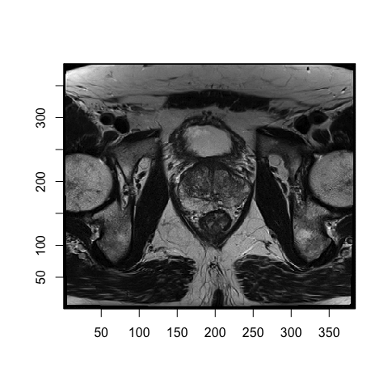
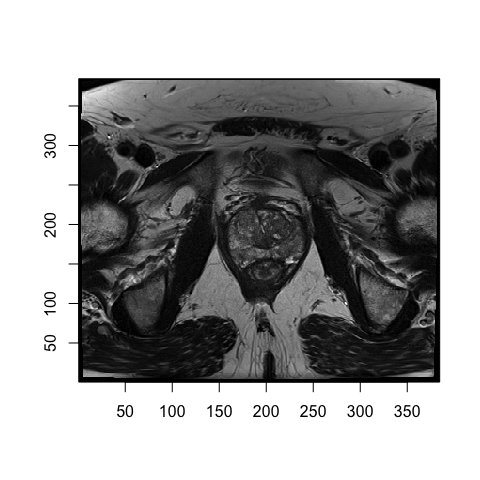
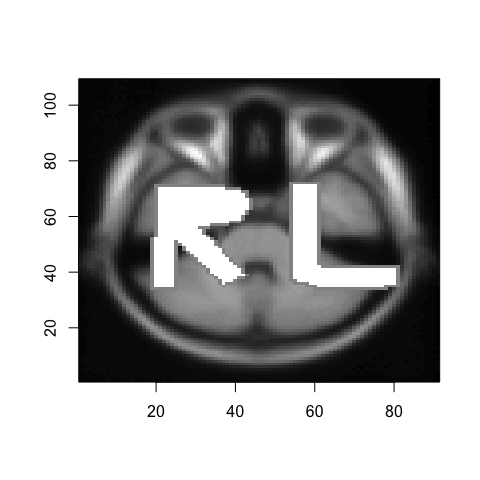
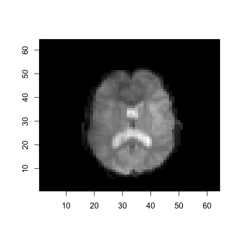

radtools is an R package that provides utilities to explore images in the two leading medical image formats: DICOM and NIfTI. This documentation demonstrates how to read image data into R, extract data and metadata, and view images.
Russell and Ghosh. Radtools: R utilities for convenient extraction of medical image metadata. F1000 Research 5 March 2019. doi: 10.12688/f1000research.17139.3
Radtools is on Neuroconductor.
To install from within R:
{r cran-installation, eval = FALSE} source("https://neuroconductor.org/neurocLite.R") neuro_install('radtools')
To install the stable release from GitHub:
{r gh-stable, eval = FALSE} neuro_install('radtools', release = "stable", release_repo = "github")
To install the development version from GitHub:
{r gh-installation, eval = FALSE} neuro_install('radtools', release = "current", release_repo = "github")
DICOM (Digital Imaging and Communication in Medicine) is a standard for management of medical images and image metadata. The DICOM standard specifies a file format definition. Each DICOM file includes optional pixel data and embedded metadata. Typically, each DICOM file contains one two-dimensional image slice. Radtools also supports DICOM files that do not contain pixel data.
DICOM metadata is embedded in each file and allows image series to be reconstructed from multiple files via shared metadata identifying the patient, etc. DICOM files can be analyzed individually, or a directory containing an entire image series can be analyzed as one three-dimensional image.
NIfTI (Neuroimaging Informatics Technology Initiative) format is an adaptation of the previous ANALYZE format that solves several challenges with the older format. NIfTI images can be a single file containing the image and metadata (.nii) or pair of files storing the image and metadata separately (.hdr/.img), and can be compressed. Image data can have up to seven dimensions. The first three dimensions are reserved for spatial dimensions and the optional fourth dimension defines time points. Unlike DICOM format, the NIfTI format specifies a constant-size header with a fixed set of metadata attributes.
This article provides an excellent introduction to NIfTI-1 format.
Our package supports NIfTI-1 format. The recently developed NIfTI-2 is very similar to NIfTI-1, and permits storage of more datapoints in each dimension. NIfTI-2 is not bitwise compatible with NIfTI-1. We will add support for NIfTI-2 if demand exists. This article provides more background on the differences between NIfTI-1 and NIfTI-2.
library(radtools)The read_dicom function reads a DICOM dataset from a single file or a directory containing multiple slices. The returned value is a list with attributes hdr and img, each with an element for each slice of the image.
Read a single slice from one .dcm file:
dicom_data_2d <- read_dicom("~/Dropbox/radtools_vignette_data/prostate/000008.dcm")
names(dicom_data_2d)
#> [1] "hdr" "img"Read a 3D image from a directory containing one .dcm file per slice:
dicom_data_3d <- read_dicom("~/Dropbox/radtools_vignette_data/prostate/")
names(dicom_data_3d)
#> [1] "hdr" "img"NIfTI format uses one .nii file or two files (.hdr and .img) to capture an entire image series. The files can be gzipped or not.
The read_nifti1 function handles any of these cases, and returns a list containing one element of class nifti.
Read a 3D NIfTI image from .hdr and .img files:
nifti_data_3d <- read_nifti1("~/Dropbox/radtools_vignette_data/avg152T1_LR_nifti")Read a 4D NIfTI image from a .nii.gz file:
nifti_data_4d <- read_nifti1("~/Dropbox/radtools_vignette_data/filtered_func_data.nii.gz")Get image dimensions or number of slices:
img_dimensions(dicom_data_2d)
#> Warning in oro.dicom::create3D(img_data): ImagePositionPatient is moving in
#> more than one dimension.
#> [1] 384 384 1
num_slices(dicom_data_2d)
#> [1] 1
img_dimensions(dicom_data_3d)
#> Warning in oro.dicom::create3D(img_data): ImagePositionPatient is moving in
#> more than one dimension.
#> [1] 384 384 19
num_slices(dicom_data_3d)
#> [1] 19
img_dimensions(nifti_data_3d)
#> [1] 91 109 91
num_slices(nifti_data_3d)
#> [1] 91
img_dimensions(nifti_data_4d)
#> [1] 64 64 21 180
num_slices(nifti_data_4d)
#> [1] 21A typical DICOM dataset will only use a subset of the available metadata attributes, while NIfTI headers always include the same set of attributes. Get the actual metadata attributes for a dataset:
header_fields_dicom <- header_fields(dicom_data_3d)
head(header_fields_dicom)
#> [1] "AccessionNumber" "AcquisitionDate"
#> [3] "AcquisitionMatrix" "AcquisitionNumber"
#> [5] "AcquisitionTime" "AdditionalPatientHistory"
header_fields(nifti_data_3d)
#> [1] ".Data" "sizeof_hdr" "data_type" "db_name"
#> [5] "extents" "session_error" "regular" "dim_info"
#> [9] "dim_" "intent_p1" "intent_p2" "intent_p3"
#> [13] "intent_code" "datatype" "bitpix" "slice_start"
#> [17] "pixdim" "vox_offset" "scl_slope" "scl_inter"
#> [21] "slice_end" "slice_code" "xyzt_units" "cal_max"
#> [25] "cal_min" "slice_duration" "toffset" "glmax"
#> [29] "glmin" "descrip" "aux_file" "qform_code"
#> [33] "sform_code" "quatern_b" "quatern_c" "quatern_d"
#> [37] "qoffset_x" "qoffset_y" "qoffset_z" "srow_x"
#> [41] "srow_y" "srow_z" "intent_name" "magic"
#> [45] "extender" "reoriented"The header_value function returns the attribute value for a given header attribute. If the dataset is a DICOM dataset with multiple slices, it returns a vector of values across slices. NIfTI datasets do not have slice-specific metadata.
header_value(dicom_data_2d, "SliceLocation")
#> [1] 7.53097
header_value(dicom_data_3d, "SliceLocation")
#> [1] 28.53097 22.53097 1.53097 25.53097 19.53097 16.53097 13.53097
#> [8] 10.53097 7.53097 -1.46903 -4.46903 -7.46903 -10.46903 -13.46903
#> [15] -16.46903 -19.46903 -22.46903 -25.46903 4.53097
header_value(nifti_data_3d, "dim_")
#> [1] 3 91 109 91 1 1 1 1
header_value(nifti_data_4d, "dim_")
#> [1] 4 64 64 21 180 1 1 1Each DICOM file has its own header containing metadata for one slice.
Get the metadata for all slices as a matrix, where rows are attributes and columns are slices:
dicom_metadata_matrix <- dicom_header_as_matrix(dicom_data_3d)
kable(dicom_metadata_matrix[1:10, 1:6])| group | element | name | code | slice_1 | slice_2 |
|---|---|---|---|---|---|
| 0002 | 0000 | GroupLength | UL | 196 | 196 |
| 0002 | 0001 | FileMetaInformationVersion | OB | ||
| 0002 | 0002 | MediaStorageSOPClassUID | UI | 1.2.840.10008.5.1.4.1.1.4 | 1.2.840.10008.5.1.4.1.1.4 |
| 0002 | 0003 | MediaStorageSOPInstanceUID | UI | 1.3.6.1.4.1.14519.5.2.1.7307.2101.420604470287150790758949858236 | 1.3.6.1.4.1.14519.5.2.1.7307.2101.192741832082705219013781007567 |
| 0002 | 0010 | TransferSyntaxUID | UI | 1.2.840.10008.1.2.1 | 1.2.840.10008.1.2.1 |
| 0002 | 0012 | ImplementationClassUID | UI | 1.2.40.0.13.1.1.1 | 1.2.40.0.13.1.1.1 |
| 0002 | 0013 | ImplementationVersionName | SH | dcm4che-1.4.31 | dcm4che-1.4.31 |
| 0008 | 0005 | SpecificCharacterSet | CS | ISO_IR 100 | ISO_IR 100 |
| 0008 | 0008 | ImageType | CS | ORIGINAL PRIMARY M NORM DIS2D | ORIGINAL PRIMARY M NORM DIS2D |
| 0008 | 0012 | InstanceCreationDate | DA | 20030816 | 20030816 |
Many metadata attributes will be identical for all slices. Get a list of these contstant attributes and their values:
const_attributes <- dicom_constant_header_values(dicom_data_3d)
head(const_attributes)
#> $GroupLength
#> [1] 196
#>
#> $FileMetaInformationVersion
#> [1] "\001"
#>
#> $MediaStorageSOPClassUID
#> [1] "1.2.840.10008.5.1.4.1.1.4"
#>
#> $TransferSyntaxUID
#> [1] "1.2.840.10008.1.2.1"
#>
#> $ImplementationClassUID
#> [1] "1.2.40.0.13.1.1.1"
#>
#> $ImplementationVersionName
#> [1] "dcm4che-1.4.31"As NIfTI images can have more than three dimensions, a simple function returns the number of dimensions:
nifti1_num_dim(nifti_data_3d)
#> [1] 3
nifti1_num_dim(nifti_data_4d)
#> [1] 4A function is provided to get all metadata attributes and values as a named list:
nifti_header_vals <- nifti1_header_values(nifti_data_4d)
# Display the first few metadata values other than the image itself
head(nifti_header_vals[names(nifti_header_vals) != ".Data"])
#> $sizeof_hdr
#> [1] 348
#>
#> $data_type
#> [1] ""
#>
#> $db_name
#> [1] ""
#>
#> $extents
#> [1] 0
#>
#> $session_error
#> [1] 0
#>
#> $regular
#> [1] "r"The image itself can be extracted as a matrix of pixel intensities using a generic function:
mat_dicom_2d <- img_data_to_mat(dicom_data_2d)
#> Warning in oro.dicom::create3D(img_data): ImagePositionPatient is moving in
#> more than one dimension.
dim(mat_dicom_2d)
#> [1] 384 384 1
mat_dicom_3d <- img_data_to_mat(dicom_data_3d)
#> Warning in oro.dicom::create3D(img_data): ImagePositionPatient is moving in
#> more than one dimension.
dim(mat_dicom_3d)
#> [1] 384 384 19
mat_nifti_3d <- img_data_to_mat(nifti_data_3d)
dim(mat_nifti_3d)
#> [1] 91 109 91
mat_nifti_4d <- img_data_to_mat(nifti_data_4d)
dim(mat_nifti_4d)
#> [1] 64 64 21 180For images with more than three dimensions (e.g. some NIfTI datasets), you can hold the additional dimensions constant and just get a 3D matrix by selecting a single coordinate for each dimension:
mat_nifti_4d_to_3d <- img_data_to_3D_mat(nifti_data_4d, coord_extra_dim = 90)
dim(mat_nifti_4d_to_3d)
#> [1] 64 64 21The view_slice function is generic and works for DICOM or NIfTI data.
View a single-slice dataset:
view_slice(dicom_data_2d)
#> Warning in oro.dicom::create3D(img_data): ImagePositionPatient is moving in
#> more than one dimension.
View one slice of a 3D image:
view_slice(dicom_data_3d, slice = 10)
view_slice(nifti_data_3d, slice = 20)
A function is also provided to view a slice of an intensity matrix instead of a DICOM or NIfTI data object. In particular, this is useful for viewing slices of NIfTI images with more than three dimensions. In that case, you can create a 3D matrix by holding extra dimensions constant using img_data_to_3D_mat, then pass that matrix to view_slice_mat.
view_slice_mat(mat_nifti_4d_to_3d, slice = 10)
Several functions are provided to explore aspects of the DICOM standard itself. These functions do not use or analyze any actual data.
Get the DICOM standard version reported here, the web URL describing the standard, and the time it was accessed during package development:
dicom_standard_version()
#> [1] "PS3.6 2018d"
dicom_standard_web()
#> [1] "http://dicom.nema.org/medical/dicom/current/output/html/part06.html"
dicom_standard_timestamp()
#> [1] "2018-10-15 15:45:47 MDT"The DICOM standard specifies a tag, name, and keyword for each allowable metadata attribute. The following functions return complete lists of these attributes. These functions are self-contained and the orderings of the returned lists do not correspond.
Tags:
tags <- dicom_all_valid_header_tags()
length(tags)
#> [1] 4297
head(tags, 10)
#> [1] "(0002,0000)" "(0002,0001)" "(0002,0002)" "(0002,0003)" "(0002,0010)"
#> [6] "(0002,0012)" "(0002,0013)" "(0002,0016)" "(0002,0017)" "(0002,0018)"Names:
names <- dicom_all_valid_header_names()
length(names)
#> [1] 4294
head(names, 10)
#> [1] ""
#> [2] "2D Degree of Freedom Axis"
#> [3] "2D Degree of Freedom Sequence"
#> [4] "2D Implant Template Group Member Matching Axes"
#> [5] "2D Implant Template Group Member Matching Point"
#> [6] "2D Line Coordinates"
#> [7] "2D Line Coordinates Sequence"
#> [8] "2D Mating Axes"
#> [9] "2D Mating Feature Coordinates Sequence"
#> [10] "2D Mating Point"Keywords:
keywords <- dicom_all_valid_header_keywords()
length(keywords)
#> [1] 4294
head(keywords, 10)
#> [1] "" "AbortFlag"
#> [3] "AbortReason" "AbsoluteChannelDisplayScale"
#> [5] "AbstractPriorCodeSequence" "AbstractPriorValue"
#> [7] "AccessionNumber" "AccessoryCode"
#> [9] "AcquiredImageAreaDoseProduct" "AcquiredSoundpathLength"You can also search the DICOM standard for attribute names and keywords matching a given string.
dicom_search_header_names("manufacturer")
#> [1] "Application Manufacturer"
#> [2] "Application Setup Manufacturer"
#> [3] "Component Manufacturer"
#> [4] "Detector Manufacturer Name"
#> [5] "Detector Manufacturer's Model Name"
#> [6] "Hardcopy Device Manufacturer"
#> [7] "Hardcopy Device Manufacturer's Model Name"
#> [8] "Information From Manufacturer Sequence"
#> [9] "IOL Manufacturer"
#> [10] "Manufacturer"
#> [11] "Manufacturer's Model Name"
#> [12] "Manufacturer's Related Model Group"
#> [13] "Modifying Device Manufacturer"
#> [14] "Notification From Manufacturer Sequence"
#> [15] "Receive Coil Manufacturer Name"
#> [16] "Secondary Capture Device Manufacturer"
#> [17] "Secondary Capture Device Manufacturer's Model Name"
#> [18] "Source Applicator Manufacturer"
#> [19] "Source Manufacturer"
#> [20] "Transmit Coil Manufacturer Name"
#> [21] "Wedge Manufacturer Name"
dicom_search_header_keywords("manufacturer")
#> [1] "ApplicationManufacturer"
#> [2] "ApplicationSetupManufacturer"
#> [3] "ComponentManufacturer"
#> [4] "DetectorManufacturerModelName"
#> [5] "DetectorManufacturerName"
#> [6] "HardcopyDeviceManufacturer"
#> [7] "HardcopyDeviceManufacturerModelName"
#> [8] "InformationFromManufacturerSequence"
#> [9] "IOLManufacturer"
#> [10] "Manufacturer"
#> [11] "ManufacturerModelName"
#> [12] "ManufacturerRelatedModelGroup"
#> [13] "ModifyingDeviceManufacturer"
#> [14] "NotificationFromManufacturerSequence"
#> [15] "ReceiveCoilManufacturerName"
#> [16] "SecondaryCaptureDeviceManufacturer"
#> [17] "SecondaryCaptureDeviceManufacturerModelName"
#> [18] "SourceApplicatorManufacturer"
#> [19] "SourceManufacturer"
#> [20] "TransmitCoilManufacturerName"
#> [21] "WedgeManufacturerName"